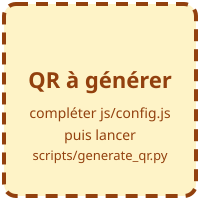

1re STI2D · Terminale SIN
L'intelligence artificielle,
comment ça marche (vraiment) ?
Steven-Moire
Ingénieur en intelligence artificielle, ancien enseignant
- Se présenter en 1 min : parcours d'enseignant puis d'ingénieur IA. Dire ce que l'on fait concrètement au quotidien (données, modèles, tests).
- Annoncer le contrat : pas de cours magistral, on manipule, on se trompe, on discute.
- Annoncer la durée et la pause éventuelle (parcours 2 h).
Version tableau
Écrire en haut : « IA : comment ça marche ? ». En dessous, trois questions qui serviront de fil rouge : 1) C'est quoi ? 2) Comment ça apprend ? 3) Qu'est-ce que ça change ?
- 2 à 3 min. Lire quelques mots à voix haute, repérer ceux qui reviennent (robot, ChatGPT, danger, film…).
- Pas de réseau : faire le tour de la salle à l'oral (voir la version tableau).
- Garder le nuage de mots : on y reviendra en conclusion pour voir si la vision a changé.
Version tableau
Écrire « IA = ? » au centre et noter autour, en nuage, les mots donnés à l'oral.
D'où vient le mot ?
Une idée de 1950, un nom de 1956
- 1950 — Alan Turing propose le « jeu de l'imitation » : si on ne distingue plus la machine d'un humain en discutant avec elle par écrit, peut-on dire qu'elle pense ?
- 1956 — À Dartmouth (États-Unis), John McCarthy, Marvin Minsky, Claude Shannon et d'autres lancent un projet de recherche sur l'« intelligence artificielle ».
- Turing, article « Computing Machinery and Intelligence » (1950). Il remplace la question floue « une machine peut-elle penser ? » par un test concret.
- Dartmouth (été 1956) : le terme figure dans la proposition de projet rédigée en 1955. Les chercheurs pensaient régler la question en un été…
- Insister : l'IA a plus de 70 ans. Ce qui est nouveau, c'est la quantité de données et la puissance de calcul.
Version tableau
Tracer une flèche horizontale. Placer 5 dates : 1950 Turing, 1956 Dartmouth, 1997 Deep Blue, 2012 AlexNet, 2020+ assistants. Une phrase courte sous chaque date.
D'où vient le mot ?
« Intelligence » ? « Artificielle » ?
Être intelligent, c'est…
- résoudre un problème nouveau ;
- apprendre de ses erreurs ;
- s'adapter à une situation ;
- comprendre, expliquer, créer…
Il n'existe pas une seule définition. Même les spécialistes ne sont pas d'accord.
« Artificielle »
= fabriquée par l'humain, pas « fausse ».
Une IA ne « pense » pas comme nous : elle calcule. Elle peut être très forte sur une tâche précise et nulle sur tout le reste.
- Demander à la salle : « Une calculatrice est-elle intelligente ? Un chat ? Un GPS ? » Laisser débattre 2 min.
- Anecdote : en anglais, intelligence veut aussi dire « renseignement » (la CIA = Central Intelligence Agency). Le mot évoque aussi le traitement d'informations.
- Idée clé : une IA actuelle est « étroite » — spécialisée sur une tâche.
Version tableau
Deux colonnes. À gauche « Intelligence » : 4 verbes donnés par les élèves (apprendre, s'adapter…). À droite « Artificielle » : « fabriquée par l'humain ≠ fausse ».
Activité · 10 min
IA ou pas IA ?
12 objets du quotidien. Pour chacun, décide : IA ou pas IA ?
Le critère qu'on va utiliser :
Le comportement est-il codé à la main par un humain, ou appris à partir de données ?
- Laisser 6 à 8 min. Les élèves peuvent travailler à deux sur un téléphone.
- Le score reste sur le téléphone, rien n'est envoyé. Aucune inscription.
- Repérer les objets qui posent débat (GPS, Deep Blue, anti-spam) pour la mise en commun.
- Plan B réseau : lancer l'activité sur le projecteur depuis le fichier local et voter à main levée.
Version tableau
Deux colonnes : « Codé à la main » | « Appris à partir de données ». Lire les 12 objets un par un, vote à main levée, écrire chaque objet dans sa colonne : thermostat, régulateur de vitesse, ABS, GPS, Face ID, anti-spam, recommandation musicale, Deep Blue, clavier prédictif, détecteur de fumée, reconnaissance vocale, traduction automatique.
Ce qu'on retient de l'activité
Écrire les règles… ou les faire apprendre
En apprentissage automatique, personne n'écrit les règles : on donne des exemples, l'ordinateur en déduit un modèle.
- Revenir sur 2 ou 3 objets qui ont fait débat. Le GPS : le calcul du plus court chemin est un algorithme écrit à la main… mais l'estimation des bouchons peut être apprise.
- Un même produit mélange souvent les deux : une partie codée, une partie apprise.
- Ce schéma est la phrase la plus importante de la séance.
Version tableau
Deux lignes. Ligne 1 : « Règles + Données → [Programme] → Réponses ». Ligne 2 : « Données + Réponses → [Apprentissage] → Règles ». Entourer « Règles » dans les deux lignes pour montrer qu'elles changent de côté.
Les mots du domaine
IA ⊃ Machine learning ⊃ Deep learning
- IA : le grand domaine, y compris des règles écrites à la main.
- Machine learning (apprentissage automatique) : la machine apprend à partir d'exemples.
- Deep learning (apprentissage profond) : du machine learning avec des réseaux de neurones « profonds ».
- Image des poupées russes : chaque cercle est inclus dans le précédent.
- Tout le deep learning est du machine learning, mais pas l'inverse (ex. : arbre de décision = ML sans réseau de neurones).
- Les assistants conversationnels actuels sont dans le plus petit cercle.
Version tableau
Dessiner trois patates emboîtées. Écrire IA (grande), ML (moyenne), DL (petite). Un exemple dans chaque zone : IA seule = Deep Blue ; ML = filtre anti-spam ; DL = Face ID.
Un phénomène curieux
L'« effet IA »
Dès qu'une machine sait le faire, on dit que « ce n'est pas vraiment de l'intelligence ».
Hier « IA »
Jouer aux échecs, calculer un itinéraire, lire un texte scanné.
Aujourd'hui
« C'est juste un programme. »
Conséquence
Le mot « IA » désigne souvent… ce qui est encore nouveau.
- Idée souvent résumée par la formule attribuée à Larry Tesler : « l'IA, c'est tout ce qui n'a pas encore été fait ».
- Lien avec le marketing : aujourd'hui, on colle « IA » sur beaucoup de produits. Réflexe à avoir : « qu'est-ce qui est appris, et à partir de quelles données ? »
Version tableau
Une flèche du temps. À gauche « 1960–1990 : IA = échecs, itinéraires ». À droite « aujourd'hui : simple programme ». Au-dessus : « l'IA, c'est ce qui n'est pas encore banal ».
Deux façons de faire
Deep Blue (1997) vs AlexNet (2012)
Deep Blue — échecs
- Explore des millions de coups par seconde.
- Les règles d'évaluation d'une position sont écrites et réglées par des experts.
- Force brute + savoir humain codé.
Recherche codée
AlexNet — reconnaissance d'images
- Réseau de neurones entraîné sur plus d'un million de photos étiquetées.
- Personne n'écrit « un chat a des oreilles pointues » : le réseau trouve seul les indices utiles.
- Rendu possible par les cartes graphiques (GPU).
Apprentissage
- Deep Blue (IBM) bat Garry Kasparov en mai 1997. Sa fonction d'évaluation a été ajustée en partie à partir de parties de grands maîtres, mais l'essentiel est de la recherche programmée.
- AlexNet (Krizhevsky, Sutskever, Hinton) gagne le concours ImageNet 2012 avec une erreur nettement plus faible que les autres méthodes. C'est le déclic du deep learning.
- Question à la salle : « Lequel des deux saurait reconnaître un chat ? Lequel saurait jouer aux dames ? » Réponse : aucun des deux sans être refait !
Version tableau
Deux colonnes : « Deep Blue 1997 : on écrit les règles, l'ordinateur cherche vite » | « AlexNet 2012 : on montre des exemples, le réseau apprend ». Dessiner un échiquier à gauche, une photo de chat à droite.
Côté STI2D / SIN
Le ML dans la chaîne d'information
Le modèle d'IA remplace une partie du traitement, à la place de seuils écrits à la main.
- Rappeler le vocabulaire du programme : chaîne d'information (acquérir, traiter, communiquer) et chaîne d'énergie.
- Le modèle peut tourner sur un serveur (cloud), sur un PC industriel ou directement sur un microcontrôleur (IA embarquée).
- Lien SIN : c'est le même schéma qu'un projet de terminale avec capteur + microcontrôleur + affichage.
Version tableau
Trois rectangles reliés par des flèches : ACQUÉRIR (capteur) → TRAITER (modèle) → COMMUNIQUER (alerte). Colorier ou entourer « TRAITER » : c'est là que se place le ML.
Exemple concret
Maintenance prédictive : écouter les vibrations
- On enregistre des semaines de vibrations d'une machine en bon état.
- Le modèle apprend à quoi ressemble le « normal ».
- Quand le signal s'en écarte, il prévient avant la panne : on change la pièce au bon moment.
- Avantage : on n'attend pas la casse (maintenance corrective) et on ne change pas les pièces trop tôt (maintenance systématique).
- Le modèle regarde en réalité beaucoup plus que l'amplitude : fréquences (spectre), température, courant moteur…
- Limite : il faut des données de qualité, et un humain décide de l'intervention. Le modèle peut se tromper (fausse alerte ou panne ratée).
Version tableau
Deux axes temps/vibration. Gauche : une sinusoïde régulière dans une bande horizontale hachurée (« normal »). Droite : une sinusoïde dont l'amplitude grandit et sort de la bande → écrire « ALERTE ». Numéroter : 1) enregistrer 2) apprendre le normal 3) détecter l'écart.
Comment une machine apprend-elle ?
Trois façons d'apprendre
Supervisé
On donne des exemples avec la bonne réponse.
Photos étiquetées « chat » / « chien », mails « spam » / « normal ».
Non supervisé
Pas de réponse fournie : la machine regroupe ce qui se ressemble.
Vibrations « normales » vs inhabituelles, groupes d'auditeurs aux goûts proches.
Par renforcement
La machine essaie, reçoit une récompense ou une pénalité, et s'améliore.
Robot qui apprend à marcher, programme qui apprend un jeu vidéo.
- Supervisé = un prof qui corrige chaque exercice. Non supervisé = trier sa collection sans consigne. Renforcement = apprendre le vélo en tombant.
- Le supervisé est le plus courant en industrie, mais étiqueter coûte cher (souvent fait par des humains).
- Les assistants conversationnels combinent plusieurs modes (pré-entraînement sur du texte, puis ajustements avec retours humains).
Version tableau
Trois colonnes avec un petit dessin : SUPERVISÉ (photo + étiquette « chat ») ; NON SUPERVISÉ (des points qui forment 2 tas entourés) ; RENFORCEMENT (un robot, une flèche « essai », un « +1 » / « −1 »).
À toi de jouer
Quel mode d'apprentissage ?
1. Repérer les pièces défectueuses sur une chaîne, à partir de 10 000 photos triées « bonne » / « défaut ».
Supervisé : chaque photo a sa bonne réponse.
2. Un drone apprend à se stabiliser en simulation : bonus s'il reste droit, malus s'il tombe.
Par renforcement : essais, récompenses, pénalités.
3. Une plateforme regroupe ses morceaux en familles de styles, sans liste de styles au départ.
Non supervisé : aucune étiquette, on cherche des groupes.
- Cliquer sur chaque situation pour révéler la réponse après un vote à main levée.
- Diapositive facultative (parcours 2 h).
Version tableau
Écrire les 3 situations numérotées. Faire voter S / NS / R. Écrire la lettre à côté de chaque situation.
Démo en direct
Entraîner un modèle en 5 minutes
- Créer 2 ou 3 classes (ex. : main ouverte, poing, rien).
- Montrer des exemples à la webcam (50 à 100 images par classe).
- Entraîner (quelques secondes).
- Tester… puis essayer de le piéger !
Projet de Google Creative Lab
Question piège : que se passe-t-il si on change le fond, la lumière ou la personne ?
- Préparer l'onglet à l'avance, tester la webcam avant la séance. La page doit être chargée tant que le réseau fonctionne.
- Faire un modèle volontairement biaisé : toutes les images « poing » avec un fond rouge. Montrer qu'il apprend… le fond. C'est un biais de données.
- Les images sont traitées dans le navigateur pour l'entraînement (vérifier les conditions du service avant la séance). Ne pas filmer les élèves sans leur accord : faire la démo avec ses propres mains.
Version tableau
Dessiner 3 boîtes : « Exemples (photos) » → « Entraînement » → « Modèle » → « Prédiction : poing 92 % ». Puis l'expérience de pensée : « si toutes les photos de poing sont prises devant un mur rouge, que va apprendre le modèle ? »
Sous le capot
Un neurone artificiel = un petit calcul
Chaque entrée est multipliée par un poids. On additionne, puis l'activation décide « combien » le neurone s'allume. Apprendre = ajuster les poids.
- Calcul à la main : x = (1, 0, 1), w = (0,5 ; −1 ; 2) → somme = 2,5. Si l'activation est « sortie = 1 si somme > 1 », alors y = 1.
- Analogie très lointaine avec le neurone biologique : ce n'est qu'un calcul.
- Un grand modèle de langage contient des milliards de poids.
Version tableau
Trois ronds x₁ x₂ x₃ à gauche, flèches avec w₁ w₂ w₃ vers un grand rond Σ, puis une boîte « activation » puis y. Faire le calcul numérique ci-dessus en direct.
Sous le capot
Un réseau : des couches de neurones
Pendant l'entraînement :
- le réseau fait une prédiction ;
- on mesure son erreur ;
- on corrige un peu tous les poids pour réduire l'erreur ;
- on recommence des milliers de fois.
Projet de D. Smilkov et S. Carter (TensorFlow)
- Dans Playground : jeu de données en spirale, lancer l'entraînement avec 1 couche puis avec 3 couches. Montrer la courbe de perte (« loss ») qui descend.
- Vocabulaire : la correction des poids s'appelle la rétropropagation du gradient. Image : descendre une montagne dans le brouillard en suivant la pente.
- Diapositive facultative (parcours 2 h).
Version tableau
Trois colonnes de ronds (3, 4, 2) reliés par des traits. Écrire à côté la boucle : « prédire → mesurer l'erreur → corriger les poids → recommencer ». Dessiner une courbe d'erreur qui descend.
Spécial images
Les réseaux convolutifs (CNN)
Des petits filtres glissent sur l'image. Les premières couches voient des traits, les suivantes des formes de plus en plus complexes.
- CNN Explainer — Polo Club of Data Science, Georgia Tech
- Réseau en 3D sur des chiffres manuscrits (MNIST) — Adam W. Harley
- Visualisation 3D : dessiner un chiffre à la souris et voir les neurones s'allumer couche par couche. Effet garanti au vidéoprojecteur.
- CNN Explainer : cliquer sur une couche de convolution pour voir le filtre glisser sur l'image.
- MNIST : base de 70 000 chiffres manuscrits, le « bonjour le monde » du deep learning.
- Plan B réseau : faire le calcul d'un filtre 3×3 sur une petite grille au tableau.
Version tableau
Dessiner une grille 5×5 avec un « 7 » en cases noircies. Dessiner un filtre 3×3 « trait horizontal » et le faire glisser : la case résultat s'allume là où il y a un trait horizontal. Puis la chaîne : pixels → traits → formes → « 7 ».
Enjeux
Dans l'industrie
Ce que ça apporte
- Contrôle qualité par caméra.
- Maintenance prédictive : moins de pannes.
- Optimisation de l'énergie d'un bâtiment.
- Aide à la conception, robots plus adaptables.
Points de vigilance
- Il faut des données fiables… et beaucoup.
- Un modèle peut se tromper : qui est responsable ?
- Sécurité informatique des systèmes connectés.
- Dépendance à quelques fournisseurs.
- Exemple vécu de l'intervenant si possible (projet industriel, sans nommer de client).
- Message : dans 80 % d'un projet IA, on travaille sur les données, pas sur le modèle.
Version tableau
Un tableau « + » / « − » avec 3 lignes chacun, rempli avec les idées des élèves.
Enjeux
Dans la société
- Biais : un modèle reproduit les défauts de ses données.
- Vie privée : nos photos, messages et trajets sont des données.
- Faux contenus : images, voix et vidéos truquées (« deepfakes »).
- Erreurs crédibles : un assistant peut inventer une réponse avec assurance.
- Travail : des tâches changent, des métiers évoluent.
Des règles existent
Le RGPD protège les données personnelles en Europe.
Le règlement européen sur l'IA (adopté en 2024) classe les usages selon leur niveau de risque.
Réflexe : vérifier la source, recouper, relire.
- Relier aux biais vus dans Teachable Machine (le fond rouge).
- Demander : « Avez-vous déjà vu une image dont vous n'étiez pas sûrs qu'elle soit vraie ? Comment vérifier ? »
- Le règlement européen sur l'IA interdit certains usages (ex. : notation sociale des citoyens) et encadre les usages « à haut risque » (recrutement, éducation, santé…).
Version tableau
Une carte mentale autour de « IA et société » : 5 branches (biais, vie privée, faux contenus, erreurs, travail) + une branche « règles : RGPD, règlement IA ».
Enjeux
Et l'environnement ?
Électricité
Les centres de données consomment environ 1,5 % de l'électricité mondiale (2024), et cette part augmente avec l'IA.
Source : Agence internationale de l'énergie, rapport « Energy and AI », 2025
Eau et matériel
Refroidir les serveurs demande souvent de l'eau. Les puces (GPU) demandent des métaux et beaucoup d'énergie à fabriquer.
Entraîner vs utiliser
Entraîner un grand modèle coûte cher une fois ; l'utiliser des millions de fois par jour coûte aussi, en continu.
Sobriété : choisir le plus petit modèle qui fait le travail, ne pas utiliser une IA géante pour une tâche qu'une règle simple résout.
- Les chiffres sur une requête individuelle varient beaucoup selon les études et les modèles : rester prudent, parler d'ordres de grandeur et citer la source.
- Lien STI2D : bilan énergétique, efficacité, cycle de vie d'un produit. Un modèle embarqué sur microcontrôleur consomme des milliwatts.
- Retour à l'activité : un thermostat n'a pas besoin d'IA !
Version tableau
Dessiner un serveur avec 3 flèches qui entrent : « électricité », « eau », « matériaux ». Écrire « ≈ 1,5 % de l'électricité mondiale (AIE, 2024) ». En dessous : « le bon outil pour le bon problème ».
Et toi ?
Des métiers autour de l'IA
Exemples de métiers
- Technicien·ne en maintenance prédictive, en instrumentation
- Développeur·se, ingénieur·e systèmes embarqués / IA embarquée
- Data analyst, data scientist, ingénieur·e machine learning
- Roboticien·ne, automaticien·ne
- Spécialiste cybersécurité, juriste du numérique, designer d'interfaces
Après le bac STI2D
- BTS CIEL (cybersécurité, informatique, électronique)
- BUT GEII, BUT Informatique, BUT Science des données
- Classe prépa TSI, puis école d'ingénieurs
- Licence informatique, écoles d'ingénieurs post-bac
Toutes ces formations ne sont pas « 100 % IA » : l'IA est un outil de plus dans des métiers techniques.
- Raconter son propre parcours en 1 min : ce n'est pas linéaire, et l'enseignement est aussi un métier du numérique.
- Insister : les bases (maths, physique, programmation, anglais technique, esprit critique) restent les plus utiles.
- Renvoyer vers les ressources d'orientation officielles (Onisep, Parcoursup) pour le détail des formations.
Version tableau
Un arbre : tronc « Bac STI2D », branches « BTS (2 ans) », « BUT (3 ans) », « Prépa TSI → école d'ingé (5 ans) », « Licence ». Au bout des branches, 1 ou 2 métiers.
Conclusion
Trois idées à retenir
- L'IA d'aujourd'hui, c'est surtout des modèles qui apprennent à partir de données.
- Un modèle n'est jamais meilleur que ses données : biais, erreurs, limites.
- C'est un outil technique, avec un coût énergétique, qu'on choisit d'utiliser… ou pas.
Des questions ?
- Revenir au nuage de mots du début : qu'est-ce qui a changé ?
- Garder 10 à 15 min pour les questions dans le parcours 2 h.
Version tableau
Écrire les 3 idées numérotées, en reprenant les 3 questions fil rouge du début (C'est quoi ? Comment ça apprend ? Qu'est-ce que ça change ?).
Pour finir en jouant
Quiz récapitulatif
Un quiz en équipes de 4 pour vérifier ce qu'on a retenu.
Un seul téléphone par équipe rejoint le quiz, puis vous répondez ensemble.
Choisissez un nom d'équipe, pas vos vrais noms.

Rejoindre le quiz- Kahoot « IASeconde » (10 questions), mode Teams → Un appareil par équipe : offre gratuite limitée à 10 appareils, donc 9 équipes de 4 environ.
- Rappeler : un seul téléphone par équipe, un nom d'équipe et pas de vrais noms.
- Plan B (réseau en panne ou plus de 10 appareils) : relancer en mode Classique : Unplugged. Aucun appareil, les équipes débattent et répondent à voix haute, l'intervenant saisit les réponses.
- Diapositive facultative (parcours 2 h).
Version tableau
Quiz oral par équipes de 4 : poser 5 questions (Turing ? Dartmouth ? Supervisé ou renforcement ? Qu'est-ce qu'un biais ? Que fait un neurone ?), points au tableau.
Ressources
Pour rejouer chez toi
Pour aller plus loin, à ton rythme et seulement si tu en as envie : un support facultatif est dans le dossier docs/aller-plus-loin du dépôt.
- Laisser cette diapositive affichée pendant les questions et la sortie : les élèves photographient les QR codes.
- Le support « pour aller plus loin » n'est pas présenté en séance. Le mentionner en une phrase.
- Avant chaque site, rappeler : chaque service a ses conditions d'utilisation et d'âge.
Version tableau
Écrire les noms des 4 outils (Teachable Machine, TensorFlow Playground, CNN Explainer, visualisation 3D de Adam Harley) : ils se trouvent facilement avec un moteur de recherche. Écrire l'adresse courte du site de la présentation.